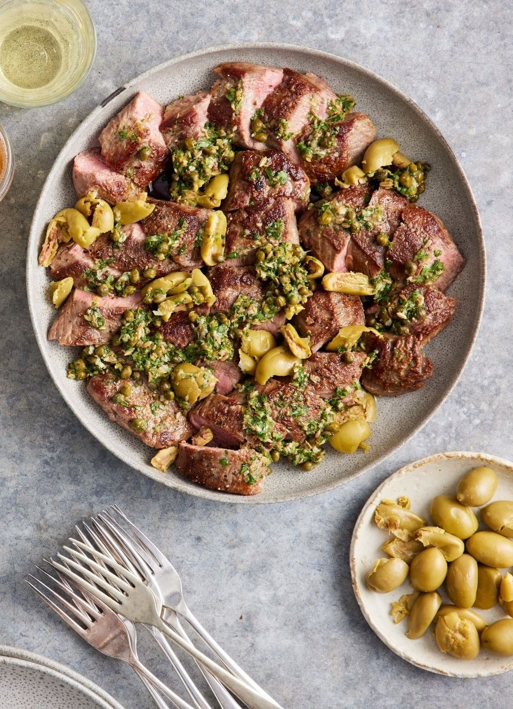

Lasagna

Description:
This is a vibrant and easy dish using a quick-cooking cut of lamb. The dressing is bursting with flavour and, along with the salty olives, is a perfect foil for the meat.
Ingredients:
- 1 teaspoon fennel seeds, toasted
- finely grated zest 1 lemon
- 2 tablespoons lemon juice
- 2 cloves garlic, crushed
- ¼ cup olive oil
- 2 tablespoons capers
- 1 tablespoon each finely chopped mint and parsley
Steps:
- Brush the lamb with a little oil and season with salt and pepper.
- Heat a large frying pan and when very hot, cook the lamb for about 2-3 minutes each side for medium-rare. Cooking time will depend on the thickness of the lamb. Try and get a good crust on the lamb. Transfer to a plate and rest, lightly covered, for
5 minutes.
- Dressing: Stir all the ingredients together in a bowl and season with salt and pepper.
- To serve: Slice the lamb against the grain and place on a platter. Drizzle with the meat resting juices, then scatter over the olives and spoon over the dressing.
- Drinks match:
From Robert Stadniczenko’s Arapai vineyard on the Dry River Flats, comes the Stad_ko Martinborough Pinot Noir 2020 ($39) This dry, spicy, leather layered and earthy pinot noir is edged with allspice and baked tamarillo, and it’s beyond lovely with lamb. Stadko.com